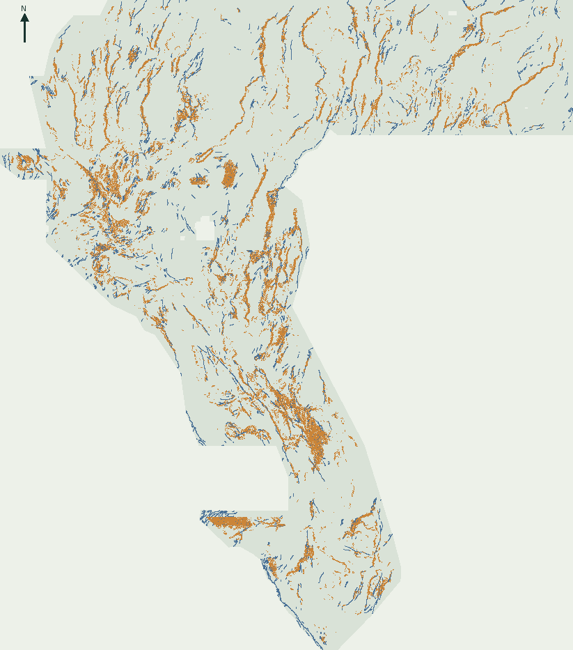

Paired gravity–RTP edges.
Not promoted.
This page records a preregistered edge-transform experiment. It is distinct from the main H55 candidate and the H55-PROFILE follow-up; the global submission/LATEST.txt pointer is left untouched. See the main H55 candidate and H55-PROFILE for those separate releases.
Spatially blocked comparison
Four contiguous, spatially blocked whole-component folds; 80-pixel separation buffer; matched 37,654-pixel budget. Catalogue-zero cells are proxy negatives, so these local known-catalogue hide/recover scores do not forecast hidden-label or leaderboard performance.
| spatial holdout | View B | R2 structural control | H55-EDGE | paired Δ vs B |
|---|---|---|---|---|
| Fold 1 | 0.177276 | 0.162195 | 0.163453 | -0.013823 |
| Fold 2 | 0.273067 | 0.268537 | 0.272018 | -0.001048 |
| Fold 3 | 0.138047 | 0.143049 | 0.142746 | +0.004699 |
| Fold 4 | 0.190294 | 0.198889 | 0.202650 | +0.012356 |
Required gate: mean lift ≥0.005 and at least 3/4 positive folds. Observed: +0.000546, 2/4. The candidate did not pass.
Full fold and metric receipt · Blockwise OOF negative-error diagnostic (maximum absolute measured correlation 0.084428; this is not proof of conditional independence) · separate buffered pseudo-label arm.
Protocol deviation (preserved, not retrofitted)
The frozen preregistration named new LoG transforms for gravity bands 13/11/18 and RTP magnetic bands 2/9. The implementation transformed only gravity band 13 and RTP band 2. The holdout and release receipt therefore describe this narrower implementation only; the omitted channels were not tested. The preregistration file is unchanged; no same-fold retuning is implied.
Frozen H55-EDGE preregistration · Post-run protocol-deviation receipt.
Execution provenance: The validator and shared R2 modules were run before merging the later main-branch H55 work. The source snapshot and per-file SHA-256 values are preserved in the execution-provenance receipt and commit 709ac3b. Paths were namespaced afterward; a post-merge rerun is not the original experiment. Large ignored input rasters and feature caches are not in the repository, and owner-pinned bytes are not organizer-authenticated.
Support novelty and output integrity
Decoded canonical-pattern uniqueness: True. Strict ≥20% support-novelty gate: False; measured novel fraction 0.0% over 414 accessible aligned priors. The support diagnostic remains failed for slot use; it is not waived. The raster is a new model inference, not a copied, renamed, recompressed, or literal-union prior file.
On-disk read-back: one float32 band, shape 3730 × 3292, EPSG:32611, finite range [0.0, 1.0], 37,654 nonzero cells, and no positive output outside the sample footprint. These are local checks, not portal acceptance.
Per-prior uniqueness audit · Release byte/format receipt · Complete submission audit JSON.

A-only pixel reasoning — measurements, not geological confirmation
The accompanying CSV has 816 rows, one for each emitted H55-EDGE point in the A-confident/B-abstaining stratum. Of these, 801 have zero measured paired sigma-3 edge response and 15 have a positive response; do not describe all A-only points as coincident-edge locations. The row-level notes list measured bands 15/19 and signed-LoG values, plus alternatives; scores are not calibrated fault probabilities.
Download the per-pixel reasoning CSV · Full on-disk audit receipt.
Potential-field contrasts can reflect lithologic contacts, intrusions, alteration, processing seams, or other non-fault causes. No displacement, geothermal flow, vent, or field confirmation is reported. Owner-side SHA pins are not organizer-byte authentication.
Source boundary
- Official competition task and metric: fault labels may be incomplete or inaccurate; this local holdout is not hidden-label evaluation.
- USGS OF 00-189 and USGS OF 00-188: regional gravity/magnetic context includes competing lithologic and fluvial explanations; neither validates these pixels.
- Official rules: weekly slot limits and AI-disclosure requirements; H55-EDGE used no slot.
- GDR submission 1391: metadata advertises data not retrieved or used in H55-EDGE.